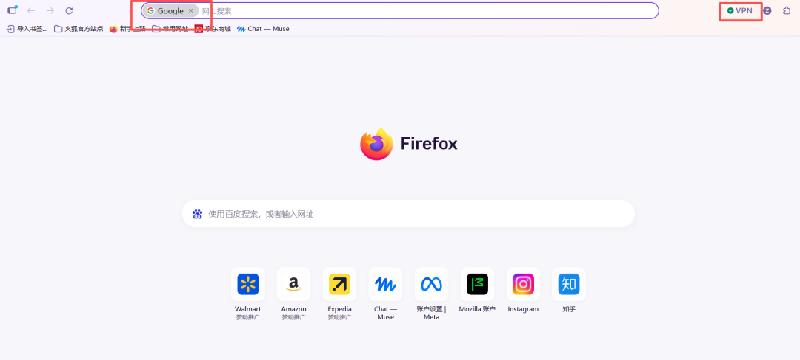
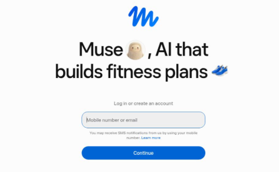
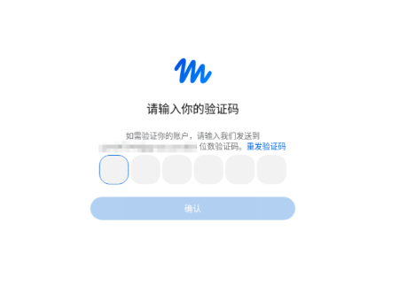
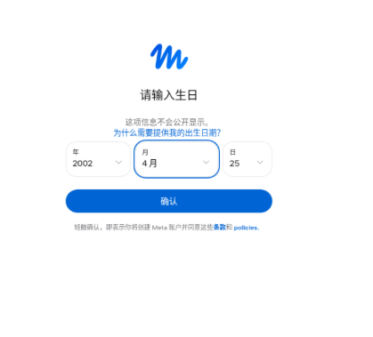
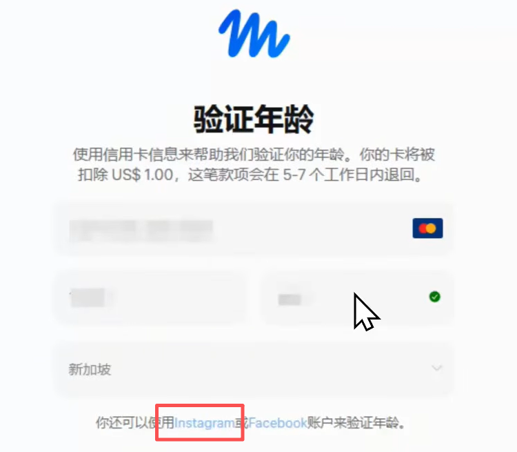
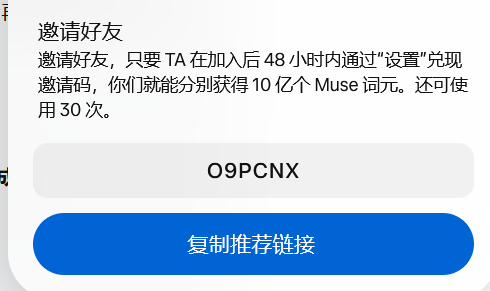

摘要： 卡在 Muse 注册这一步的人看这一篇就够了。火狐浏览器 + 谷歌邮箱 + Ins 账号，我亲测跑通的完整流程，全程不用绑银行卡。注册后别忘了用我的邀请码，我们各得 10 亿个 Muse 词元。
————————————————————————
我今天注册 Muse，费了不少功夫才跑通。
一开始也是到处卡：页面进不去、定位不对、验证过不了。后来换了个思路，一步一步试，总算找到了一个最简单的方法。
整个过程不需要银行卡，我把亲测成功的完整流程写下来，同样想试试 Muse、但卡在注册这一步的朋友，照着做就行。
先放一个福利在这里：
快来看看你的个人 AI 智能体 Muse。在加入后的 48 小时内通过“设置”兑现我的邀请码，我们就能分别获得 10 亿个 Muse 词元。
邀请码：O9PCNX
https://muse.ai/join先把邀请码存好，注册成功后第一件事就是去兑现，千万别等过期了。
一、先说说，Muse 到底值得折腾吗？
Muse 是 Meta 推出的个人 AI 智能体。
它和我们平时用的聊天式 AI 不太一样。它不只是一个你问一句、它答一句的窗口，更像一个长期跟在你身边的个人代理：
第一，它有自己的一台电脑。
它可以在自己的电脑上帮你查资料、整理文件、做文档、做规划。你不在的时候，经你安排的任务也能继续推进。
第二，它能记住你。
对话是连续的，它对你的了解会一点点积累起来。不用每次打开都重新自我介绍、重新解释背景。
第三，它能连接你的常用应用。
在你批准之后，它可以连接 Gmail、Google Calendar 这类应用，帮你管理收件箱、起草回复，添加、修改和重新安排日程。
第四，它能处理多步骤的任务。
做方案、订行程、跟进一件复杂的事情，你给它一个目标，它会自己拆解步骤去完成，而不是等你一步一步指挥。
这也是为什么，我觉得它值得花点时间把注册这一步搞定。
二、注册前，先准备好这 3 样东西
别急着打开官网，先把东西备齐，后面会顺很多：
1. 火狐浏览器 Firefox
这是这次注册要用的浏览器，不要用平时常用的浏览器代替。
2. 谷歌邮箱 Gmail
用来接收注册验证码。
3. Instagram 账号，也就是 Ins 账号
后面年龄验证环节要用。没有的话，注册过程中再去注册一个也可以。
三样齐了，就可以开始了。
三、完整注册步骤，我亲测的顺序
第 1 步：用火狐打开 VPN，选择美国节点
这是整个方法里最关键的一步。
先打开火狐浏览器，再打开火狐自带的 VPN，选择美国节点。

为什么一定要强调火狐？
因为如果单纯用普通 VPN，即使用了美国节点，定位也很可能不在美国，这一步过不了，后面就会卡住。而火狐的定位可以定位到美国，这是我试了几次之后才发现的关键区别。
提醒一句：注册全程保持美国节点不要动，也不要中途换浏览器。
第 2 步：搜索 Muse，打开官网
在火狐浏览器里搜索 Muse，打开官网。
也可以直接从这里进入：https://muse.ai/join
第 3 步：填写谷歌邮箱，接收验证码
进入注册页面后，填写你准备好的谷歌邮箱账号。注意，如果之前你的账号已经注册过了，但是没成功，显示在排队中，那么这个邮箱号就不能用了。

提交之后，邮箱会收到一封带验证码的邮件。打开 Gmail，把验证码填回注册页面，就能进入下一步。
如果验证码没有马上到，先耐心等一两分钟，再检查一下垃圾邮件文件夹，不要反复点发送。

第 4 步：年龄验证，选择 Ins 验证
填完验证码，就到了年龄验证环节。一定要大于18岁！

确认后，下一步直接选择 Ins 验证。
这也是整个方法不用银行卡的原因——不用走其他更麻烦的验证方式，用你现有的 Ins 账号就能完成。

第 5 步：没有 Ins 账号，就先注册一个
如果你在上一步发现自己没有 Ins 账号，不用慌，界面会让你去注册一个，先去注册一个 Ins 账号，再回来完成验证就行。
已经有 Ins 账号的朋友，跳过这一步，直接验证。
验证成功，你就进去了
如果加载很久，过一会儿刷新看看，我就是一开始以为没成功，过一会儿刷新了直接进去了。
Ins 验证通过后，就直接进入 Muse 的页面了，注册到这里就算完成。
进去之后，系统会引导你给你的 Muse 取一个名字，再跟着提示走完初始设置，就可以正式开始用了。
四、注册成功后，第一件事：兑现邀请码
这一步非常重要，很多人都会漏掉。
兑现是有时间限制的：必须在加入后的 48 小时内完成。
注册成功后，马上打开“设置”，兑现我的邀请码：
邀请码：O9PCNX

兑现成功后，我们就能分别获得 10 亿个 Muse 词元。
对你来说是白拿的额度，对我也是一份支持，所以别等到第二天想起来时已经过期了。
还没注册的朋友，也可以先从这里进入：https://muse.ai/
五、最后，把整个流程总结成一句话
火狐浏览器打开 VPN 选美国节点 → 打开 Muse 官网 → 谷歌邮箱收验证码 → Ins 完成年龄验证 → 注册成功后在 48 小时内到“设置”里兑现邀请码 O9PCNX
不用银行卡，步骤也不多，卡点主要就在第一步的浏览器和定位上。把第一步做对，后面基本是一路顺下来的。
小提示：Muse 目前官方开放地区为美国和加拿大，平台规则后续如有调整，请以官网最新提示为准。本文为个人实测经验分享。
如果你也卡在注册这一步，建议先把这篇收藏下来，再对照着一步一步操作。
你注册成功了吗？邀请码兑现了吗？欢迎在评论区告诉我，我看到会回复。
觉得有用的话，帮我点个在看，转发给同样想试试 Muse 的朋友。